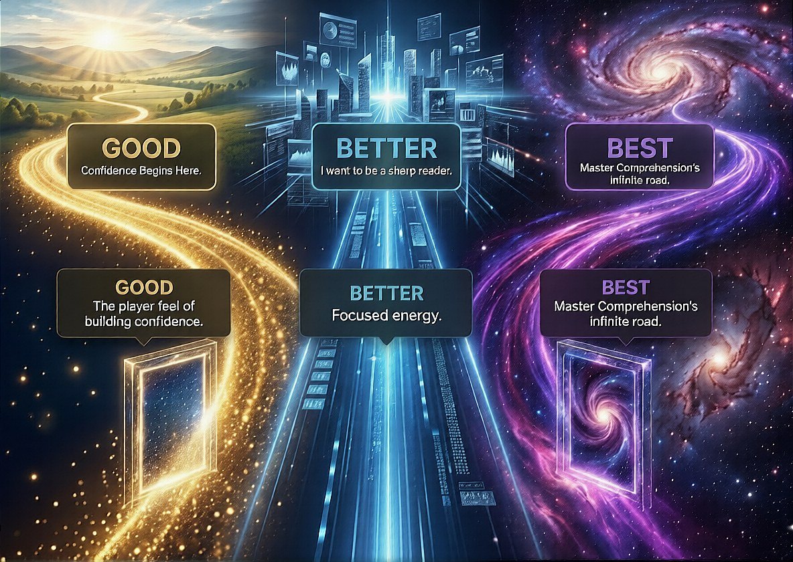

Global Sovereign University · The Crown Jewel of Comprehension
Trifurcation Road
The Chapter Walk · Chapter 1 of The World Climb · Twelve gates. Three roads. One honest certificate.

The Law of the Road
This road cannot be guessed. A missed question never returns. The next gate asks something different, drawn from a deep well. Answers change their number, their order, and sometimes there are no choices at all — only your own words. Some gates demand you select every true statement; some demand you place events in order. Elimination will not save you. Only the chapter will.
You begin on the Better road. Answer three gates in a row correctly and the purple road opens — Best. Miss a gate and the road pushes you back a stone and down a road. On Good, you cannot fall further — but a miss slides you back two stones. Twelve gates stand between you and the end. The road you finish on is the certificate you earn: only those who pass the final gate on Best earn Master Comprehension's Infinite Road.
First: Read the Chapter

WORLD
CLIMB
The road tests Chapter 1 — The Oldest Economy on Earth, exactly as written. Read it here, or read it with your place saved and free listen-aloud in the Sovereign Reading Room. GENO has memorized the entire book if you want a study partner — in any of 83 languages.
Part 1 · Barter Before Money: The First Trades
Before there was a coin to clink in a pocket, before there was a bank to approve or deny you, there was a human being with something another human being wanted. That is the first economy. Not paper. Not metal. Not numbers in an account. The deal.
It is easy to imagine barter as primitive, a rough draft of “real” commerce. But that story comes from the modern habit of treating money as the center of gravity. If you shift your eyes back far enough, the center of gravity changes. Early people did not wake up “broke” because there was no concept of being broke in the way we mean it now. There was hunger, there was winter, there was risk, there was effort. And there was the oldest solution any group of humans has ever built: exchange.
Picture a small settlement at the edge of a river. The details differ by continent and century, but the bones of the scene are the same. Someone returns from the water with fish. Someone else has gathered roots and wild onions. Another has the patience and knowledge to shape a sharp edge from stone, and someone has learned how to bind that edge to wood with sinew so it holds. In this world, a “job” is not a title. It is a contribution. And a contribution becomes a claim: I did this, so I can reasonably ask for that.
The first trades were not likely conducted with stiff, formal negotiation the way people imagine a barter transaction today. There were no price tags. There was no official scale. There was only need, observation, and memory.
Need is simple: my child is hungry, your fire is hot, the rain is coming, and my shelter leaks. Observation is practical: you are good with your hands, you seem to have more grain than you can eat, and you have extra clay pots stacked by the wall. Memory is the glue: you helped me last winter; you refused my sister; you always bring back more than you need; you are fair; you are selfish. In small groups, memory is a kind of ledger. It keeps accounts without ink.
If you want to understand barter before money, do not start by imagining strangers meeting on a road like two merchants in a storybook. Start by imagining neighbors. Most early exchange happened among people who were going to see each other again. That matters because it changes the shape of the deal. When you meet again, cheating is expensive. When reputation travels faster than you can, dishonesty is a poor strategy. The trade is not only about goods; it is about belonging.
An early hunter might return with meat. Fresh meat is urgent. It spoils. The value is high, but the window is short. A person who knows how to preserve meat by smoking it has something the hunter needs: time. Another person has the skill to stitch hides into warm clothing. In a cash economy, you might say, “What do you charge?” In an early barter economy, the question is closer to, “How do we make sure everyone makes it through the season?”
That question is not charity. It is logistics. Survival is a team project.
So a portion of meat becomes future warmth: a hide worked into a cloak. Another portion becomes tools: a new spear shaft, a repaired knife, and a stronger cord. Another portion becomes labor: someone spends a day helping patch a roof before the wind picks up.
The meat moves through the group like a pulse, and in return the hunter’s household becomes stronger. Not because of money, but because value has been translated.
This is a key idea you will see again and again in this book: value does not disappear when cash disappears. It changes language. Money is one language of value. Barter is another. And barter is older, not because it is less sophisticated, but because it was built directly on what humans can do for each other.
In the earliest communities, specialization began quietly. The person who could shape stone reliably made more blades than they personally needed. The person who understood plants could treat wounds and sickness. The person with the patience to fire clay without cracking it became the source of containers that made storage possible. Specialization creates surplus, and surplus creates trade.
And trade creates a strange miracle: it allows you to live beyond your own hands.
When you can trade, you do not need to be the best at everything. You need to be useful at something. That is a different kind of security than modern people are taught to chase. Today, security is often portrayed as a number: a salary, a savings balance, a credit score. In the first economy, security was a network and a reputation: the remembered evidence that you are the kind of person who contributes and trades fairly. If you hear an echo of the book’s promise here, you should. You are not broke; you are simply un-traded. The earliest humans could not afford to let anyone’s ability sit idle, because unused ability was wasted survival.
There is another misconception that needs correcting: the idea that barter is always a direct swap of equal items at the same moment. That kind of trade exists, and we will talk about it later because it is useful. But early exchange often had a softer edge. It was common for the exchange to be delayed, uneven in the moment, and balanced over time. You give me fish today; I help you build a fence tomorrow, and you share grain when the harvest comes. The “currency” was trust, and the interest rate was reputation.
This is important because it shows that the first deals were not merely transactions. They were relationships with terms.
If you want to see how barter likely worked before money, imagine a simple problem: a family needs a new shelter. One person can cut and place the heavy posts. Another can weave reeds for the roof. Another can shape pegs. Another can watch the children. The shelter goes up because labor is traded and coordinated and because the family building the shelter will owe favors, food, protection, or future labor to those who helped. No one needs a coin to understand this. It is a human instinct dressed in practical clothing: I help you now; you help me later. If I never help anyone, I am a burden. If I help and no one ever helps me, I am being exploited. So the group develops norms, spoken and unspoken, that keep exchange roughly fair.
Fair does not mean equal. It means it's acceptable to both sides given the need, timing, and risk.
A sharp knife in a world of dull stones is not “worth” the same as a basket of berries even if both are valuable. A knife lasts, makes other tasks easier, and can save a life. But berries might be the difference between a child sleeping hungry and one fed that night.
The worth shifts with context. Barter teaches you to look at context the way money tries to make you ignore it.
There is also a deeper layer to the earliest trades: the exchange of knowledge. A person who knows where the animals migrate or how to find water in a dry season holds a kind of wealth that cannot be held in the hand. Teaching that knowledge is a trade too. In early societies, knowledge was not only power; it was survival equipment. You might trade a place near the fire, protection, food, or status in exchange for being taught. Over generations, this becomes craft, apprenticeship, and tradition. The old economy is not only about things. It is about skills moving from one mind to another.
If you strip away the romance and the myths, the first economy can be described in one sentence: humans noticed each other’s strengths and used exchange to turn those strengths into shared stability.
And yes, there were strangers too. As groups grew, paths formed. Rivers became highways. Coasts became trade lines. People met at seasonal gatherings, at places where salt could be collected, where obsidian could be found, and where animals passed through. Strangers who did not share a daily life still found ways to trade because trade is a way to reduce uncertainty. If I can leave this meeting with goods I cannot easily make, I increase my odds. If I can build a reputation across groups, I increase my safety when I travel. Even when trust is thin, the desire to trade is thick.
Those early stranger-trades also reveal something modern readers should remember: money did not replace barter because barter was “bad.” Money emerged because trade expanded beyond what memory and reputation alone could efficiently track. When exchanges stretched across distance and time, people needed a portable, agreed-upon measure. Money is a tool for scaling the deal. It is not the beginning of the deal.
So when we talk about barter roaring back in uncertain times, we are not talking about a trendy hack or a desperate fallback. We are talking about a return to a foundation that has always been under our feet. The first trades were born from necessity, yes, but also from creativity. People looked at what they had, looked at what they could do, and asked the question that still powers every climb you will make in this book:
“What do you need, and what do I have that can help?”
That question built the first economy. It can build your next one, too.
Part 2 · How Societies Thrived Without Currency
If the first economy was the deal, then the first prosperity was coordination.
Modern people tend to picture life without currency as a constant scramble, as if the absence of money meant the absence of order. But the opposite is closer to the truth. When you remove price tags, people do not stop valuing things. They become more precise about what value actually is: usefulness, timing, skill, reliability, and access. A society does not thrive because it has coins. It thrives because it can move food, labor, tools, and knowledge to where they are needed, when they are needed, without breaking trust in the process.
Return to that river settlement you pictured earlier. Fish come in waves. Roots and onions come on different schedules. Clay needs time to be gathered, shaped, dried, and fired. Hides need scraping and smoking. Roofs need patching before storms, not after.
Currency makes these timing problems easy to hide because money can sit still while value moves later.
But early societies solved the same problem by building human systems that kept value moving even when no one carried “payment” in their pocket.
One of the most important systems was specialization with obligation.
As soon as someone became the reliable blade maker, the group quietly rearranged around that fact. Not with official titles, but with expectation. The blade maker did not need to spend as many hours hunting for food because the group understood that sharp tools increased everyone’s odds. In return, the blade-maker was expected to keep producing, repairing, and teaching. This is how a “job” existed long before jobs had names: your consistent usefulness earned you consistent support.
In a cash world, it can sound like a trap: “So the group just supported the specialist?” But remember the earlier point: most exchange was among neighbors who would see each other again. A specialist who stopped contributing would not keep receiving. A group that failed to support its specialist would lose the specialist’s output and soon pay for it in slower harvests, torn clothing, untreated injuries, and wasted time. The system policed itself because the consequences were immediate. Survival made accountability practical.
Specialization also created a second miracle: surplus.
Surplus is not only “extra stuff.” It is extra capacity. If the potter can make containers faster than each household can, then food can be stored. If food can be stored, the group can ride out lean weeks. If the group can ride out lean weeks, people can spend time on tasks that do not pay off today, like improving shelters, experimenting with crops, or training apprentices. That is how thriving begins: the moment a community can invest rather than merely react.
Without currency, communities learned to keep rough accounts using the tools that were always available: memory, reputation, and ritual.
We already touched on memory as a kind of ledger. In a small group, everyone knows who helped raise whose shelter, who shared meat when a hunt failed, who repaired tools without being asked. That knowledge is not abstract. It affects who gets help first when the river floods or when sickness hits. In that sense, reputation was not a social extra. It was infrastructure.
But memory alone becomes messy as groups grow. So societies developed patterns that made exchanges easier to track and harder to deny. Certain kinds of giving became public. Certain kinds of obligations became ceremonial. Feasts, shared workdays, seasonal gatherings, and communal projects were not only cultural. They were economic technology.
Consider a roof-patching day before the rains. In a modern setting, you might hire labor. In the old economy, you assembled it. One household called in the kind of help that builds “credit” in human terms. The people who came were fed. They were thanked in front of others. Their effort was witnessed. The family receiving the help did not hand out coins, but they did something equally powerful: they acknowledged a debt that everyone now knew existed. That public witness mattered. It turned a private favor into a social fact, which made the future repayment more reliable.
This is one reason barter is often misunderstood today. People imagine it as two individuals haggling over a direct swap.
But whole communities thrived through a wider system of exchange, one that blended direct trades with delayed returns, mutual aid, and shared projects. The “currency” was the community’s agreement about what counted as fair and what counted as shameful.
Fairness, remember, did not mean equal. It meant "acceptable" given the context: need, timing, and risk. A hunter who returned with meat was not only offering food. They were offering calories at the exact moment calories mattered. A person who could preserve that meat by smoking it offered something different: the ability to stretch the value across weeks. Those are different forms of wealth. A thriving society knew how to translate between them.
Translation is the right word. Barter is a translation economy. It turns one kind of value into another without requiring money as the middle language.
Meat becomes labor. Labor becomes shelter. Shelter becomes safety. Safety becomes time. Time becomes learning. Learning becomes a better tool. Better tools become more food. The loop tightens. The community climbs.
And knowledge, as mentioned earlier, was one of the most valuable things traded because it could multiply without being consumed. A clay pot traded to you means I no longer have that pot. But a technique taught to you means we both have it. Early societies built thriving networks by moving knowledge the way modern economies move capital.
This is where apprenticeships enter the story. An apprentice was not “working for free.” An apprentice was trading present effort for future ability. The expert was trading time and guidance for current assistance and for the security of knowing the craft would continue. In a world where a single skilled person could become a bottleneck for the whole community, training was not a luxury. It was risk management.
A village with one healer and no students was fragile. A village with three people who knew the plants, the bandages, and the signs of fever was resilient. The trade that created that resilience might look like this: “Come gather with me. Help me prepare. Watch and learn. In return, your family eats at my fire, and when you can do this work, you will be supported too.” That is not a paycheck. That is a ladder.
Societies also thrived without currency by building shared stores and shared rules around them. Grain, dried fish, salt, and tools could be pooled, protected, and rationed during hard times. This was not communism in the modern political sense, and it was not charity. It was insurance built out of relationships. The pool existed because everyone understood two truths at once: some seasons are generous, and some seasons are brutal; and no individual can perfectly predict which one will hit them next.
Pooling does not work without norms. Who is allowed to draw from the store? How much? Under what conditions? Who guards it? Who decides? These are economic questions even if no one uses economic vocabulary. Many societies answered with a blend of elders’ authority, public accountability, and reciprocal obligation. If you consistently contributed when you had surplus, you earned the right to draw when you didn’t. If you consistently refused to contribute, you found yourself last in line when the winter came.
Again, reputation becomes enforcement. Not through abstract moralizing, but through practical consequence. In a cash economy, you can sometimes hide behind anonymity.
In a small barter economy, you are rarely anonymous. People know where you live, and they remember.
Even trade with strangers, which we began to glimpse at the end of the last section, contributed to thriving. Seasonal meeting places were more than markets. They were information exchanges. Who had diseases spreading? Which routes were safe? What new tool designs were circulating? What plants were being cultivated in a distant valley? People did not only carry goods along rivers and coasts. They carried updates. That made long-distance barter a way of reducing uncertainty, and reducing uncertainty is one of the fastest ways a society becomes more stable.
Notice what is absent in all of this: the idea that money is what makes growth possible. Growth came from the ability to make agreements, to honor them, and to build systems where agreements could scale beyond two people standing face-to-face.
That is why money arrived later. Not because humans finally became “advanced,” but because the deal became too big for bare memory to hold. When you are trading with people who do not know your childhood stories, when exchange stretches across seasons and miles, the old ledger of reputation has gaps. Money, in its earliest forms, helped bridge those gaps. It was a tool for trust at distance.
But before that tool existed, societies still managed to thrive because they invested in a different kind of wealth: social coherence. They built networks where usefulness was recognized, contribution was expected, and debts were not always written down but were felt and remembered. They also built a powerful internal compass about value, because when there is no price tag to lean on, you have to actually think.
And that brings us back to the promise you heard earlier: you are not broke; you are simply un-traded.
Early people could not afford to leave ability unused. A person who could weave, carry, cook, mend, teach, carve, calm a frightened child, or find water in dry ground was not “poor” because they lacked coins. They were wealthy in the only sense that mattered: they could translate what they could do into what they needed, through the deal.
Thriving without currency was never about romantic simplicity. It was about practical intelligence: noticing strengths, coordinating effort, storing surplus, moving knowledge, and enforcing fairness through reputation. It was a system built from human nature under pressure, refined by necessity, and kept alive by one repeated question, asked in a thousand different voices: “What do you need, and what can I offer that helps?”
Part 3 · Why Barter Never Truly Disappeared
If money was invented to help the deal scale, it is tempting to tell a simple story: barter was the old way, money was the upgrade, and the old way faded out like a tool left behind. But human systems rarely work like clean replacements. The truth is messier and more useful for you: barter never truly disappeared because the deal is not a technology that can be retired. It is a human reflex.
Even in a world of banks, apps, and tap-to-pay, people still trade value directly whenever money becomes inconvenient, unavailable, inappropriate, or simply less meaningful than trust. Sometimes the trade is obvious and practical, like a neighbor helping you move a couch in exchange for you watching their dog next weekend.
Sometimes it is quiet and almost invisible, like the way families operate: a parent cooks, a teenager fixes the Wi-Fi, someone else drives, someone else translates a form, and no one sends an invoice. That is not “outside the economy.” That is the oldest economy running under a modern roof.
You can see why this matters if you return to the ideas we just built: memory as a ledger, reputation as infrastructure, and exchange as translation. Those mechanisms did not vanish when coins arrived. Money added a new language, but it never erased the old one. People still keep private ledgers in their minds. They still notice who shows up. They still feel the difference between someone who contributes and someone who only takes. And they still form agreements that are not primarily about price tags but about timing, reliability, and relationships.
In fact, money often pushes barter into the places where it shines most: within communities, within trusted networks, and within moments of uncertainty.
Think about what money is designed to do. It makes it easier to trade with strangers. It compresses value into a portable symbol. It lets you measure and compare quickly. Those are superpowers, especially when trade spans distance. But those same superpowers can also flatten the human detail that barter naturally forces you to look at. Money is efficient, but it can be blunt. Barter is slower, but it is precise in a different way. It asks, “What do you need right now?” It asks, “What do I have that actually helps?” It asks, “What makes this fair given our situation?”
Those questions do not stop being relevant just because a currency exists.
Barter stays alive wherever money has blind spots. One blind spot is cash scarcity. Not poverty in the moralized sense, but the simple fact that cash can be tight even when value is abundant. A person can be skilled, hardworking, and useful and still have an empty wallet because wages lag, bills spike, a job disappears, or a bank draws a line. In those moments, the oldest economy steps forward because it does not require permission. There is no approval process for usefulness. There is only the deal.
Another blind spot is trust. Money is excellent for transactions where you do not want a relationship. You buy the thing. You leave. You do not owe each other anything beyond the receipt. But a large part of human life is not built on one-and-done exchanges. It is built on repeated contact: neighborhoods, schools, workplaces, extended families, religious communities, local clubs, and small business ecosystems. In those places, the ongoing relationship has value of its own. Barter naturally strengthens that value because it turns exchange into a shared story rather than a solitary purchase.
This is why you still see barter thriving in the same pattern as that river settlement from earlier, just wearing modern clothing. The names change, but the bones are the same.
A person who knows how to fix things becomes the modern blade maker. Maybe it is a mechanic who can keep old cars alive, or the friend who can diagnose a laptop in ten minutes, or the neighbor who can repair a leaky pipe before it turns into a disaster. Their skill creates surplus for others: time saved, money not spent, problems prevented. And people respond the same way early communities did, with specialization and obligation. They do not always pay cash. They bring meals. They offer childcare. They help with a remodel. They connect the fixer to someone else who needs the skill. They repay in the currency of access and support, which is how barter often works when the deal is ongoing.
You also see barter in the way knowledge moves. In earlier pages, we talked about teaching as survival equipment and apprenticeship as a ladder. That never stopped, either. Modern life is full of knowledge trades: “Show me how to do this spreadsheet, and I’ll help you prep for your interview.” “Teach me the basics of your language and I’ll tutor your kid in math.” “Let me shadow you for a day, and I’ll volunteer at your event.” These are not sentimental favors. They are practical exchanges where one kind of value becomes another without passing through money.
And then there are moments when money does not disappear entirely but becomes an awkward tool for what is happening. Not everything wants a price tag. There are times when offering cash feels like an insult or a distance maker, as if you are trying to buy your way out of a relationship. In many cultures and families, certain acts of help are supposed to create a bond, not end it. When you attend to someone’s need during sickness, grief, or crisis, the exchange is often delayed and social rather than immediate and numerical. People remember. Memory becomes the ledger again. The debt is not a bill. It is a thread.
If you want proof that barter never went away, look at what happens when a system shakes. When a storm cuts off roads, when a recession dries up spending, when a supply chain hiccups, and when inflation makes yesterday’s wages feel smaller, people instinctively start asking barter questions. Who has extra? Who can fix it? Who can cook? Who has a generator? Who can share a ride? Who knows how to preserve food? It sounds like crisis, but it is also clarity. In a pinch, the brain returns to the oldest logic: identify strengths, coordinate, exchange, and survive.
This is not romantic. It is not a hobby. It is the same practical intelligence we described earlier when the settlement stored food and pooled resources. When pressure rises, the deal becomes visible again.
There is also a quieter reason barter persists: because money is not the only measure people care about. Even in stable times, barter can express values that money cannot easily express. Trading services can preserve dignity when receiving help might otherwise feel like charity. It can keep someone contributing when cash income is low. It can let a person build a reputation when they lack formal credentials. It can include the unbanked, the young, the newly arrived, and the people whose skills are real but not yet recognized by a marketplace that requires paperwork.
In other words, barter remains because it keeps the economy human-sized. It is a way for people to say, “I see what you can do,” and “Here is what I can do,” and “Let’s make a fair exchange.” That sense of being seen, not as a number but as a contributor, is a form of wealth that money does not automatically provide.
Of course, barter can be messy. Reputation can be unfair. Memory can be selective. Communities can exclude. Old systems can become rigid. None of this is perfect. But notice something important: money has its own versions of those problems. The point is not that barter is pure. The point is that barter is resilient because it is adaptable. It can be formal or informal, immediate or delayed, private or public, direct or chained through a network. It can run alongside money or replace it when money falters.
And in modern life, barter often survives by hiding in plain sight, wearing new names. People call it “networking.” They call it “mutual aid.”
They call it “skills exchange,” “time banking,” “favor trading,” “community support,” “side hustles,” and “collaboration.” But the engine is the same one that moved meat through a settlement like a pulse, turning calories into roofs and roofs into safety and safety into time.
Underneath all the branding, there is still the same question that built the first economy: “What do you need, and what do I have that can help?”
Here is the crucial connection to the promise of this book. If barter never truly disappeared, then the ladder it offers is not theoretical. It is not a museum piece. It is here, now, running through your daily life like an underground river. You do not need to invent a new economy. You need to notice the one that still exists and step into it with intention.
That begins with seeing barter not as desperation but as translation. The river settlement did not “fall back” on barter. It climbed with it. People noticed each other’s strengths, specialized, built trust, and moved value where it was needed. Money later made certain things easier, especially at distance, but it did not erase the deal because the deal is older than money and closer to the ground.
So when you hear someone say barter is outdated, remember what that claim really means. It means they have forgotten how much of life still runs on cooperation, reputation, and exchange that cannot be reduced to a receipt. They have mistaken one ladder for the only ladder.
In the next chapter, we are going to bring this down to the level of your own life. Because if barter never died, then the most dangerous lie is not that money is useful. It is. The most dangerous lie is that money is the only proof you have value. The old economy has been waiting for you, not as a fantasy, but as a practical way to begin climbing from exactly where you are.
About 5,000 words · roughly 20 minutes read carefully. The gates quote nothing at you — they ask what the chapter meant.

“Own the path you are walking today. Do not waste energy regretting a wrong turn or a missed exit. Your only real competition is the version of you that wanted to quit.” — Dr. Gene A Constant